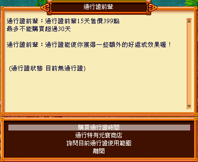

通行證系統
官方說明
連結：https://mo.lager.com.tw/default/index_news?id=2647
購買資訊
- NPC： 通行證前輩 (京城 93,197 附近)
- 售價： 399 點數 (時效 15 天，最高累積至 30 天)
- 生效範圍： 同一遊戲帳號下所有角色皆可享用。
▲ 通行證前輩 NPC 位置
通行證特權
- 無等限制： 製造裝備、藥品不限制等級。
- 金幣倍增： 戰鬥金幣獲得量提升 1 倍。
- 英雄打工： 開啟英雄打工功能，獎勵至人力仲介處領取。
- 經驗大師： 每天使用次數額外增加 3 次。
- 專用商店： 可購買神者系列工具 (耐用 6000, 7元寶)。
- 任務上限： 京城隨機任務接取上限提升至 7 個。

▲ 通行證功能介面